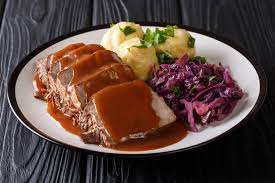

Traditional Sauerbraten

Sauerbraten is a German roast of marinated meat, traditionally beef.
Traditional Sauerbraten is a classic German pot roast dish that has been enjoyed for centuries.
The name "Sauerbraten" translates to "sour roast," which accurately reflects the unique
preparation method.
Typically made with beef (though other meats like lamb, pork, or even poultry can be used),
the dish involves marinating the meat in a mixture of vinegar, water, and spices for several days.
Ingredients
- 3 pounds beef rump roast
- 2 large onions, chopped
- 1 cup red wine vinegar, or to taste
- 1 cup water
- 1 tablespoon salt
- 1 tablespoon ground black pepper
- 1 tablespoon white sugar
- 10 whole cloves, or more to taste
- 2 bay leaves, or more to taste
- 2 tablespoons all-purpose flour
- salt and ground black pepper to taste
- 2 tablespoons vegetable oil
- 10 gingersnap cookies, crumbled
Steps
- Place beef rump roast, onions, vinegar, water, 1 tablespoon salt, 1 tablespoon black pepper,
sugar, cloves, and bay leaves in a large pot. Cover and refrigerate for 2 to 3 days, turning
meat daily. Remove meat from marinade and pat dry with paper towels, reserving marinade.
- Season flour to taste with salt and black pepper in a large bowl. Sprinkle flour mixture over beef.
- Heat vegetable oil in a large Dutch oven or pot over medium heat; cook beef until brown on all
sides, about 10 minutes.
- Pour reserved marinade over beef, cover, and reduce heat to medium-low. Simmer until beef
is tender, 3 1/2 to 4 hours.
- Remove beef to a platter and slice.
- Strain solids from remaining liquid and continue cooking over medium heat. Add gingersnap
cookies and simmer until gravy is thickened, about 10 minutes. Serve gravy over sliced beef.